Brand and launch Tapster’s alcohol delivery and keg retrieval service.
Align marketing campaigns with a revamped experience, built in React.
Tapster's voice and visual language were born from competitive analysis, audience research, and rounds of creative concepting. The analysis of lookalike experiences gave the team comparable apps to learn from.
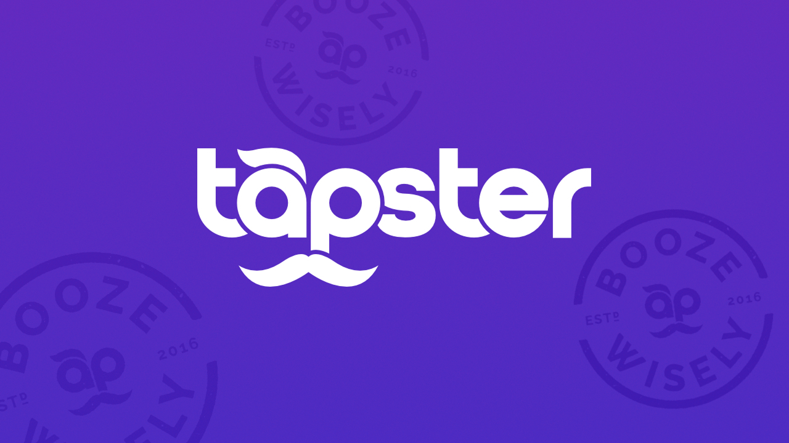 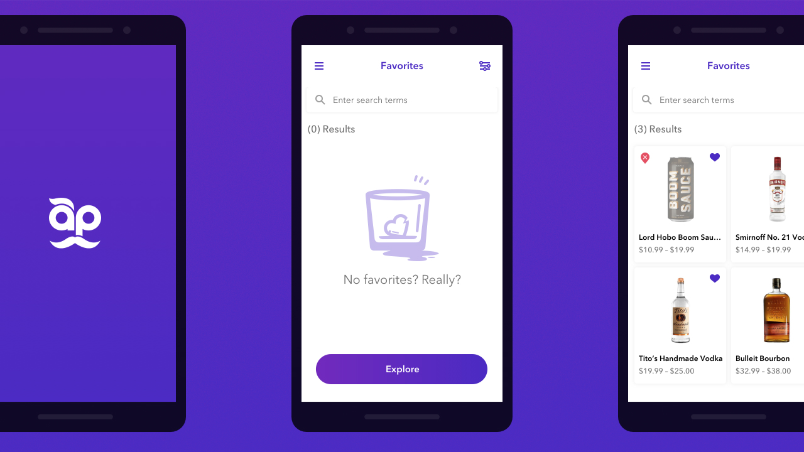We had a functioning prototype to test the end-to-end customer journey. I built a “birdseye” view of the app to benchmark flows that help users accomplish tasks. The audit revealed where to focus our efforts.
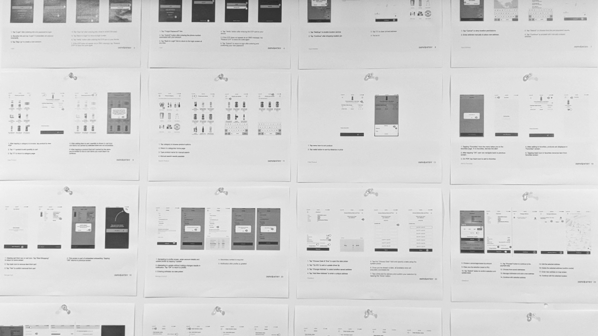 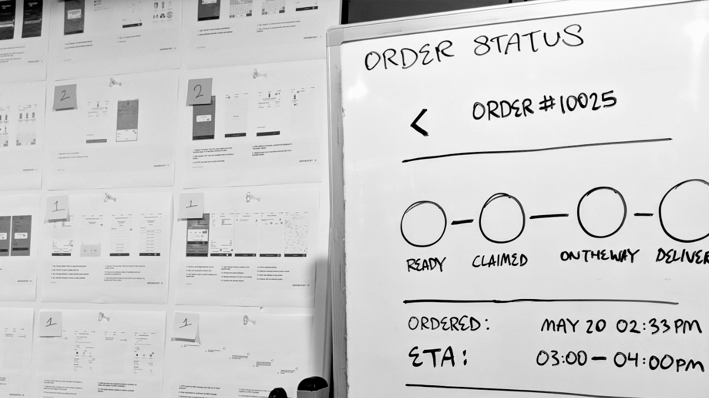From the audit we were able to extract valuable jobs-to-be-done. These tasks were documented in the form of user stories, written from the perspective of three personas crafted from initial audience research. Two user story creation workshops prompted company-wide participation.
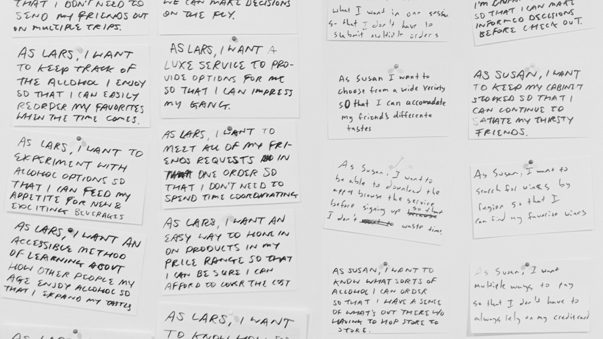 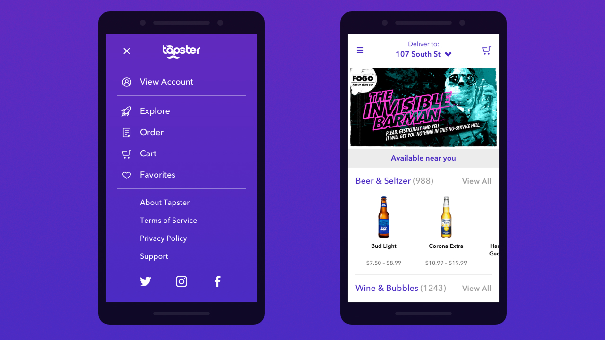 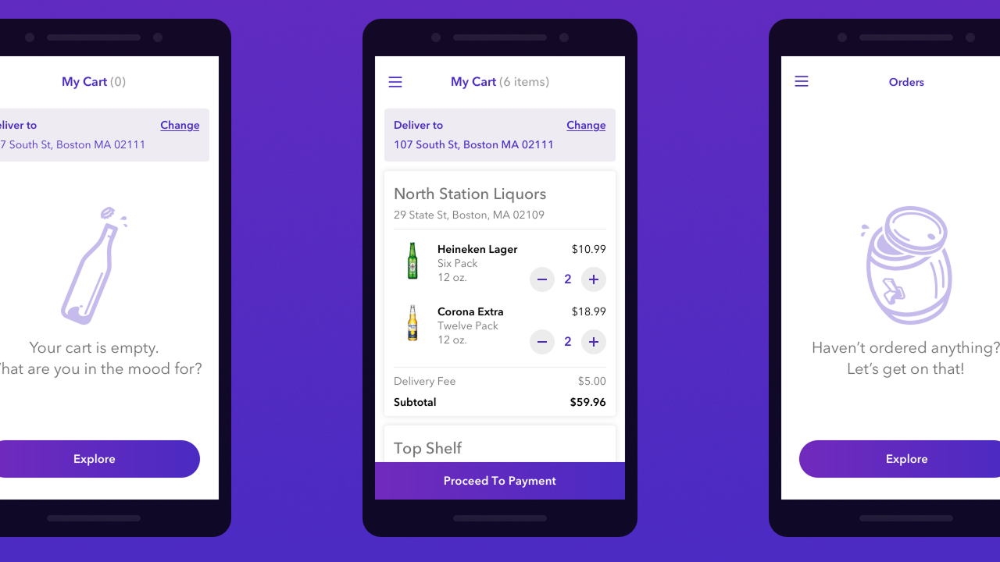I worked with INPHANTRY’s Creative Director to organize user stories into epics based on task flows. When our seven week production timeline was reduced to five, we had to cut out a few proposed features. We decided to reduce product discovery, specifically filtering and recommendations, to concentrate on ordering flows.
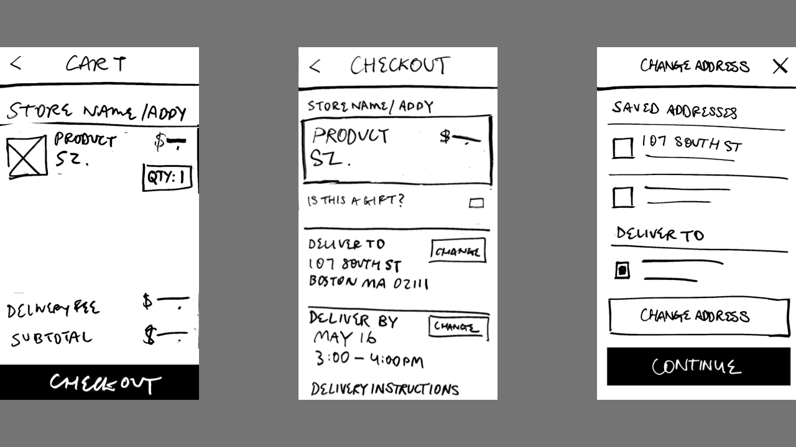 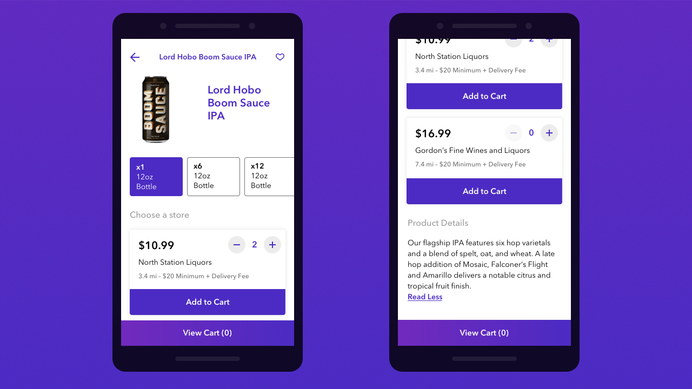I was on point for daily standups, coordinating the development team around progress and blockers. I led weekly client presentations to share new wireflows and validate assumptions with stakeholders. Approved flows allowed the team to apply Tapster’s new brand identity to the UI.
It was refreshing to step away from visual design decisions and support the Junior Designer’s vision through internal review. This allowed us to reveal design on a rolling basis while I drew up the next phase of wireflows.
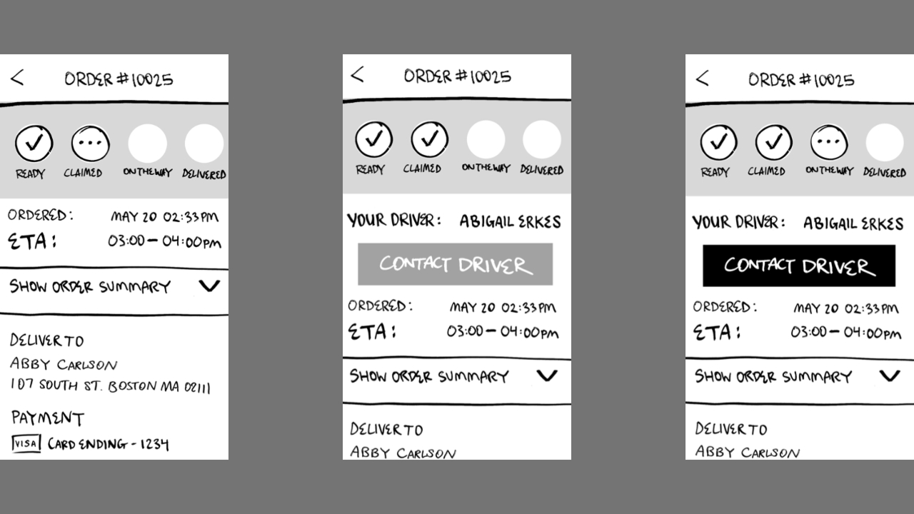 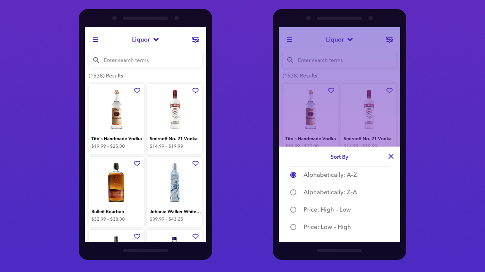 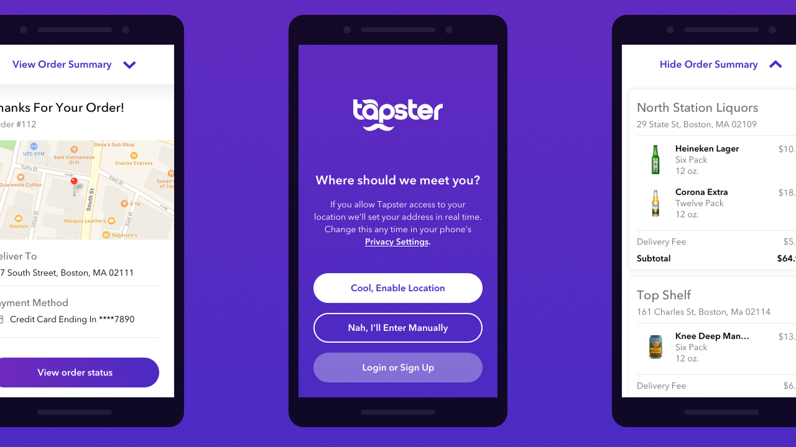We frequently shared unfinished work so that stakeholders had a voice in the process. Since we were our own QA team, I was installing new builds and tracking bugs in between design work and presentations. A shapeshifting schedule ultimately led us to a successful app store submission and thus, the MVP was launched.
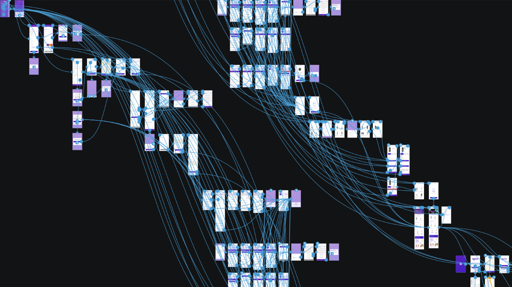 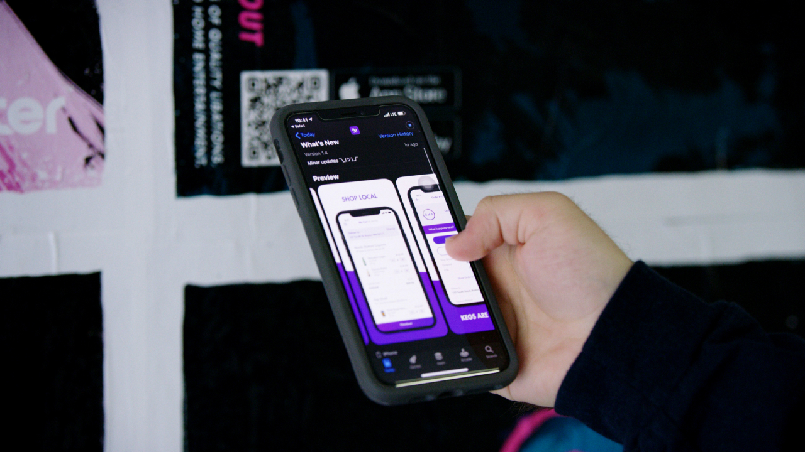Abby Carlson, Jacob Roscoe, Kevin Ngo, Derek Tran, Regi Jacob, Kevin Lee, Em Montoya